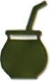
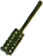
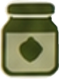
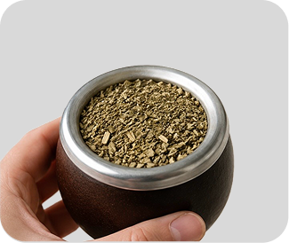
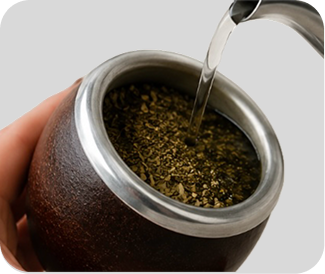
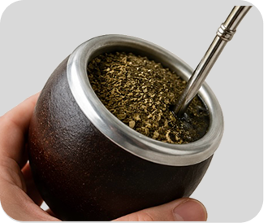
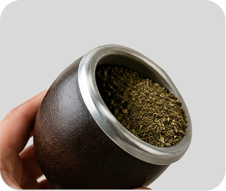

TIPS Y CONSEJOS
Consejos útiles para mejorar tu experiencia

Cómo curar un mate de calabaza
- Llenarlo con yerba usada
- Dejar reposar 24 hs
- Raspar suavemente el interior

Cómo limpiar una bombilla
- Meterla en agua hirviendo
- Limpiar el filtro regularmente
- Evitar acumulación de yerba
¿Qué temperatura debe tener el agua?
- Entre 70° y 80°
- Nunca hirviendo
- El agua muy caliente puede quemar la yerba

Cómo conservar la yerba
- Guardarla en un lugar seco
- Evitar humedad y calor
- Mantenerla cerrada correctamente
Tips para que el mate dure más
- No mojar toda la yerba de una vez
- Cebar siempre en el mismo lugar
- Girar la bombilla lo menos posible
Cómo lograr un buen mate
- No usar agua hirviendo
- Inclinar la yerba
- Mantener la bombilla quieta
CÓMO HACER LA MONTAÑITA
Paso a paso para preparar un buen mate
1

Llenar el mate
Llená el mate hasta 3/4 con yerba SIN PALO
2

Inclinar la yerba
Tapá el mate con tu mano e inclinalo para formar la montañita
3

Agregar agua tibia
Verté un poco de agua tibia en la parte baja de la yerba
4

Colocar bombilla
Introducí la bombilla por el sector húmedo tapando el orificio